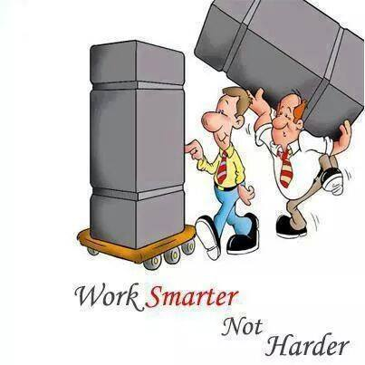

Anti Pattern
v2.0
What, Who, Where, How?
If I had eight hours to chop down a tree, I'd spend six sharpening my ax.
-- Abraham Lincoln
What is Design Patterns?
A means to create re-usable solution for the same task or issue that is needed to be solved.
What is anti-pattern?
A means of doing things for a re-occurring task or issue that in an inefficient manner.

Can I give you some *pointers?
Editor Wars!

In the begining ...
There were two types of editors:
- Emacs
- VI
Every pixel of a mouse movement == 1 key stroke
In Programming
Premature Optimization
The real problem is that programmers have spent far too much time worrying about efficiency in the wrong places and at the wrong times;
premature optimization is the root of all evil (or at least most of it) in programming.
-- Donal Knuth
(Magic) Literal Values